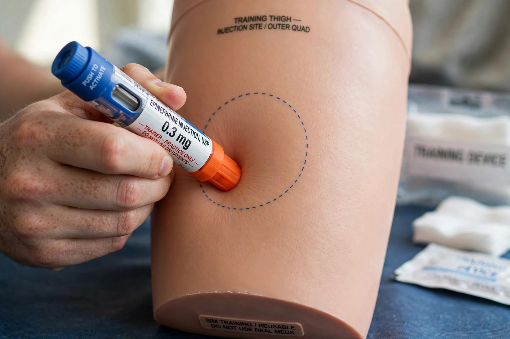

Epinephrine autoinjector
From Wikipedia, the free encyclopedia

An epinephrine autoinjector is a medical device for injecting a measured dose of Epinephrine (adrenaline) through a spring-loaded needle, designed for self-administration (or by a bystander) in Anaphylaxis. The best-known brand, EpiPen, became a household name — and a case study in drug pricing when its US price rose from about $100 to over $600 per two-pack between 2007 and 2016. The standard advice for use — 'blue to the sky, orange to the thigh' — is taught in first-aid courses worldwide.
Use
In anaphylaxis (severe allergic reaction), intramuscular epinephrine into the outer thigh is the first-line treatment — antihistamines and steroids are adjuncts only. Devices deliver 0.3 mg (adult) or 0.15 mg (junior) in the US standard; guidelines urge early use and a second dose after 5–15 minutes if symptoms persist, since delayed epinephrine is the common factor in fatal reactions.
History and controversy
The autoinjector derives from military nerve-agent kits (ComboPen); Sheldon Kaplan's design became the EpiPen (approved 1987), marketed by Mylan from 2007. Mylan's price escalation, 'EpiPen4Schools' programme and classification lobbying produced congressional hearings, a $465 million settlement over Medicaid rebates, generic competition (including Teva's and the Auvi-Q rival with voice instructions), and a lasting emblem of American pharmaceutical politics.